# Load the autoencoder model which will be used to decode the latents into image space.
vae = AutoencoderKL.from_pretrained("CompVis/stable-diffusion-v1-4", subfolder="vae")
# Load the tokenizer and text encoder to tokenize and encode the text.
tokenizer = CLIPTokenizer.from_pretrained("openai/clip-vit-large-patch14")
text_encoder = CLIPTextModel.from_pretrained("openai/clip-vit-large-patch14")
# The UNet model for generating the latents.
unet = UNet2DConditionModel.from_pretrained("CompVis/stable-diffusion-v1-4", subfolder="unet")DiffEdit Paper Implementation
technical
research
Implementing the DiffEdit Paper
The goal of this blog post is to implement the DiffEdit paper to the best of my understanding. While this task is primarily to help my own understanding of the process, I also want to help the reader of my post understand the process better as well.
Before I start, I want to give a big thanks to the DiffEdit authors (Guillaume Couairon, Jakob Verbeek, Holger Schwenk, and Matthieu Cord) for publishing this paper. Without the openness and willingness to share, this type of implementation would not be possible. I also want to thank the fast.ai community for helping me solve problems when I was unclear about how to move forward. Finally, I want to thank Jonathan Whitaker, the auther of the Stable Diffusion Deep Dive notebook. This was the notebook that I started with in my DiffEdit implementation.
If anybody reading this blog post works in manufacturing and cares about improving product quality (or knows somebody that does), please reach out to me at kevin@problemsolversguild.com.
#hide ## Loading the models
This code (and that in the next section) comes from the Huggingface example notebook.
This will download and set up the relevant models and components we’ll be using. Let’s just run this for now and move on to the next section to check that it all works before diving deeper.
If you’ve loaded a pipeline, you can also access these components using pipe.unet, pipe.vae and so on.
# The noise scheduler
# scheduler = LMSDiscreteScheduler(beta_start=0.00085, beta_end=0.012, beta_schedule="scaled_linear", num_train_timesteps=1000)
scheduler = DDIMScheduler(beta_start=0.00085, beta_end=0.012, beta_schedule="scaled_linear", clip_sample=False, set_alpha_to_one=False)scheduler.timestepstensor([999, 998, 997, 996, 995, 994, 993, 992, 991, 990, 989, 988, 987, 986,
985, 984, 983, 982, 981, 980, 979, 978, 977, 976, 975, 974, 973, 972,
971, 970, 969, 968, 967, 966, 965, 964, 963, 962, 961, 960, 959, 958,
957, 956, 955, 954, 953, 952, 951, 950, 949, 948, 947, 946, 945, 944,
943, 942, 941, 940, 939, 938, 937, 936, 935, 934, 933, 932, 931, 930,
929, 928, 927, 926, 925, 924, 923, 922, 921, 920, 919, 918, 917, 916,
915, 914, 913, 912, 911, 910, 909, 908, 907, 906, 905, 904, 903, 902,
901, 900, 899, 898, 897, 896, 895, 894, 893, 892, 891, 890, 889, 888,
887, 886, 885, 884, 883, 882, 881, 880, 879, 878, 877, 876, 875, 874,
873, 872, 871, 870, 869, 868, 867, 866, 865, 864, 863, 862, 861, 860,
859, 858, 857, 856, 855, 854, 853, 852, 851, 850, 849, 848, 847, 846,
845, 844, 843, 842, 841, 840, 839, 838, 837, 836, 835, 834, 833, 832,
831, 830, 829, 828, 827, 826, 825, 824, 823, 822, 821, 820, 819, 818,
817, 816, 815, 814, 813, 812, 811, 810, 809, 808, 807, 806, 805, 804,
803, 802, 801, 800, 799, 798, 797, 796, 795, 794, 793, 792, 791, 790,
789, 788, 787, 786, 785, 784, 783, 782, 781, 780, 779, 778, 777, 776,
775, 774, 773, 772, 771, 770, 769, 768, 767, 766, 765, 764, 763, 762,
761, 760, 759, 758, 757, 756, 755, 754, 753, 752, 751, 750, 749, 748,
747, 746, 745, 744, 743, 742, 741, 740, 739, 738, 737, 736, 735, 734,
733, 732, 731, 730, 729, 728, 727, 726, 725, 724, 723, 722, 721, 720,
719, 718, 717, 716, 715, 714, 713, 712, 711, 710, 709, 708, 707, 706,
705, 704, 703, 702, 701, 700, 699, 698, 697, 696, 695, 694, 693, 692,
691, 690, 689, 688, 687, 686, 685, 684, 683, 682, 681, 680, 679, 678,
677, 676, 675, 674, 673, 672, 671, 670, 669, 668, 667, 666, 665, 664,
663, 662, 661, 660, 659, 658, 657, 656, 655, 654, 653, 652, 651, 650,
649, 648, 647, 646, 645, 644, 643, 642, 641, 640, 639, 638, 637, 636,
635, 634, 633, 632, 631, 630, 629, 628, 627, 626, 625, 624, 623, 622,
621, 620, 619, 618, 617, 616, 615, 614, 613, 612, 611, 610, 609, 608,
607, 606, 605, 604, 603, 602, 601, 600, 599, 598, 597, 596, 595, 594,
593, 592, 591, 590, 589, 588, 587, 586, 585, 584, 583, 582, 581, 580,
579, 578, 577, 576, 575, 574, 573, 572, 571, 570, 569, 568, 567, 566,
565, 564, 563, 562, 561, 560, 559, 558, 557, 556, 555, 554, 553, 552,
551, 550, 549, 548, 547, 546, 545, 544, 543, 542, 541, 540, 539, 538,
537, 536, 535, 534, 533, 532, 531, 530, 529, 528, 527, 526, 525, 524,
523, 522, 521, 520, 519, 518, 517, 516, 515, 514, 513, 512, 511, 510,
509, 508, 507, 506, 505, 504, 503, 502, 501, 500, 499, 498, 497, 496,
495, 494, 493, 492, 491, 490, 489, 488, 487, 486, 485, 484, 483, 482,
481, 480, 479, 478, 477, 476, 475, 474, 473, 472, 471, 470, 469, 468,
467, 466, 465, 464, 463, 462, 461, 460, 459, 458, 457, 456, 455, 454,
453, 452, 451, 450, 449, 448, 447, 446, 445, 444, 443, 442, 441, 440,
439, 438, 437, 436, 435, 434, 433, 432, 431, 430, 429, 428, 427, 426,
425, 424, 423, 422, 421, 420, 419, 418, 417, 416, 415, 414, 413, 412,
411, 410, 409, 408, 407, 406, 405, 404, 403, 402, 401, 400, 399, 398,
397, 396, 395, 394, 393, 392, 391, 390, 389, 388, 387, 386, 385, 384,
383, 382, 381, 380, 379, 378, 377, 376, 375, 374, 373, 372, 371, 370,
369, 368, 367, 366, 365, 364, 363, 362, 361, 360, 359, 358, 357, 356,
355, 354, 353, 352, 351, 350, 349, 348, 347, 346, 345, 344, 343, 342,
341, 340, 339, 338, 337, 336, 335, 334, 333, 332, 331, 330, 329, 328,
327, 326, 325, 324, 323, 322, 321, 320, 319, 318, 317, 316, 315, 314,
313, 312, 311, 310, 309, 308, 307, 306, 305, 304, 303, 302, 301, 300,
299, 298, 297, 296, 295, 294, 293, 292, 291, 290, 289, 288, 287, 286,
285, 284, 283, 282, 281, 280, 279, 278, 277, 276, 275, 274, 273, 272,
271, 270, 269, 268, 267, 266, 265, 264, 263, 262, 261, 260, 259, 258,
257, 256, 255, 254, 253, 252, 251, 250, 249, 248, 247, 246, 245, 244,
243, 242, 241, 240, 239, 238, 237, 236, 235, 234, 233, 232, 231, 230,
229, 228, 227, 226, 225, 224, 223, 222, 221, 220, 219, 218, 217, 216,
215, 214, 213, 212, 211, 210, 209, 208, 207, 206, 205, 204, 203, 202,
201, 200, 199, 198, 197, 196, 195, 194, 193, 192, 191, 190, 189, 188,
187, 186, 185, 184, 183, 182, 181, 180, 179, 178, 177, 176, 175, 174,
173, 172, 171, 170, 169, 168, 167, 166, 165, 164, 163, 162, 161, 160,
159, 158, 157, 156, 155, 154, 153, 152, 151, 150, 149, 148, 147, 146,
145, 144, 143, 142, 141, 140, 139, 138, 137, 136, 135, 134, 133, 132,
131, 130, 129, 128, 127, 126, 125, 124, 123, 122, 121, 120, 119, 118,
117, 116, 115, 114, 113, 112, 111, 110, 109, 108, 107, 106, 105, 104,
103, 102, 101, 100, 99, 98, 97, 96, 95, 94, 93, 92, 91, 90,
89, 88, 87, 86, 85, 84, 83, 82, 81, 80, 79, 78, 77, 76,
75, 74, 73, 72, 71, 70, 69, 68, 67, 66, 65, 64, 63, 62,
61, 60, 59, 58, 57, 56, 55, 54, 53, 52, 51, 50, 49, 48,
47, 46, 45, 44, 43, 42, 41, 40, 39, 38, 37, 36, 35, 34,
33, 32, 31, 30, 29, 28, 27, 26, 25, 24, 23, 22, 21, 20,
19, 18, 17, 16, 15, 14, 13, 12, 11, 10, 9, 8, 7, 6,
5, 4, 3, 2, 1, 0])The first thing we need to do is choose an image that we want to use as a starting point. I chose to go with a picture that was similar to one of the images used in the paper, but maybe a little harder.
p = FastDownload().download('https://negativespace.co/wp-content/uploads/2020/11/negative-space-horses-in-field-with-trees-1062x705.jpg')
init_image = Image.open(p).convert("RGB")
# init_image = init_image.resize((init_image.size[0]//2, init_image.size[1]//2))
init_image = init_image.resize((512,512))
init_image
-819200.00% [8192/-1 00:00<00:00]
-1638400.00% [16384/-1 00:00<00:00]
-2457600.00% [24576/-1 00:00<00:00]
-3276800.00% [32768/-1 00:00<00:00]
-4096000.00% [40960/-1 00:00<00:00]
-4915200.00% [49152/-1 00:00<00:00]
-5734400.00% [57344/-1 00:00<00:00]
-6553600.00% [65536/-1 00:00<00:00]
-7372800.00% [73728/-1 00:00<00:00]
-8192000.00% [81920/-1 00:00<00:00]
-9011200.00% [90112/-1 00:00<00:00]
-9830400.00% [98304/-1 00:00<00:00]
-10649600.00% [106496/-1 00:00<00:00]
-11468800.00% [114688/-1 00:00<00:00]
-12288000.00% [122880/-1 00:00<00:00]
-13107200.00% [131072/-1 00:00<00:00]
-13926400.00% [139264/-1 00:00<00:00]
-14745600.00% [147456/-1 00:00<00:00]
-15564800.00% [155648/-1 00:00<00:00]
-16384000.00% [163840/-1 00:00<00:00]
-17203200.00% [172032/-1 00:00<00:00]
-18022400.00% [180224/-1 00:00<00:00]
-18841600.00% [188416/-1 00:00<00:00]
-19660800.00% [196608/-1 00:00<00:00]
-20480000.00% [204800/-1 00:00<00:00]
-21299200.00% [212992/-1 00:00<00:00]
-22118400.00% [221184/-1 00:00<00:00]
-22937600.00% [229376/-1 00:00<00:00]
-23756800.00% [237568/-1 00:00<00:00]
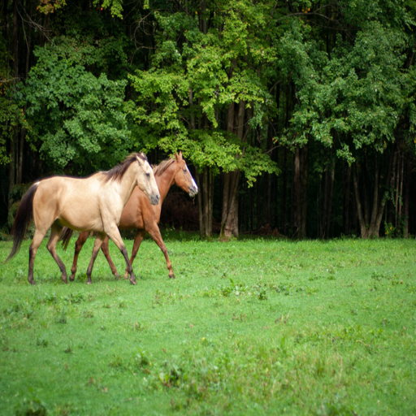
Now that I have found an image, let’s define the reference_text and the query_text. These are defined in the paper as R and Q. Let’s follow the paper here and keep Q and R simple.
reference_text = "Two horses"
query_text = "Two zebras"A good amount of the code in the next few cells is coming from the StableDiffusionImg2ImgPipeline function in the diffusers library. This was very helpful in creating the implementation I ended up with
def preprocess(image):
w, h = image.size
w, h = map(lambda x: x - x % 32, (w, h)) # resize to integer multiple of 32
image = image.resize((w, h), resample=PIL.Image.Resampling.LANCZOS)
image = np.array(image).astype(np.float32) / 255.0
image = image[None].transpose(0, 3, 1, 2)
image = torch.from_numpy(image)
return 2.0 * image - 1.0def get_text_embeddings(prompt, negative_prompt, tokenizer, text_encoder, do_classifier_free_guidance, device): #outputs text_embeddings
# get prompt text embeddings
text_inputs = tokenizer(prompt, padding="max_length", max_length=tokenizer.model_max_length,
return_tensors="pt", truncation=True)
text_input_ids = text_inputs.input_ids
text_embeddings = text_encoder(text_input_ids.to(device))[0]
# text_embeddings = text_embeddings.repeat_interleave(num_images_per_prompt, dim=0)
if negative_prompt is None:
uncond_tokens = [""]
else:
uncond_tokens = negative_prompt
max_length = text_input_ids.shape[-1]
uncond_input = tokenizer(uncond_tokens, padding="max_length", max_length=max_length,
return_tensors="pt", truncation=True)
with torch.no_grad():
uncond_embeddings = text_encoder(uncond_input.input_ids.to(device))[0]
# duplicate unconditional embeddings for each generation per prompt
# uncond_embeddings = uncond_embeddings.repeat_interleave(batch_size * num_images_per_prompt, dim=0)
# For classifier free guidance, we need to do two forward passes.
# Here we concatenate the unconditional and text embeddings into a single batch
# to avoid doing two forward passes
text_embeddings = torch.cat([uncond_embeddings, text_embeddings])
return text_embeddingsdef get_timestamps(scheduler, num_inference_steps, strength, device):
scheduler.set_timesteps(num_inference_steps)
# get the original timestep using init_timestep
offset = scheduler.config.get("steps_offset", 0)
init_timestep = int(num_inference_steps * strength) + offset
init_timestep = min(init_timestep, num_inference_steps)
timesteps = scheduler.timesteps[-init_timestep]
timesteps = torch.tensor([timesteps], device=device)
t_start = max(num_inference_steps - init_timestep + offset, 0)
return timesteps, t_startdef encode_image(init_image, latents_dtype, device):
# encode the init image into latents and scale the latents
init_image = preprocess(init_image)
init_image = init_image.to(device=device, dtype=latents_dtype)
with torch.no_grad(): init_latent_dist = vae.encode(init_image).latent_dist
init_latents = init_latent_dist.sample(generator=generator)
init_latents = 0.18215 * init_latents
return init_latentsdef img2noise(init_image,
prompt,
mask=None,
strength = 0.5,
num_inference_steps = 50,
guidance_scale = 5,
negative_prompt=None,
generator = None,
output_type = "pil",
return_dict = True,
callback = None,
callback_steps = 1,
device='cuda'
):
do_classifier_free_guidance = guidance_scale > 1.0
text_embeddings = get_text_embeddings(prompt, negative_prompt, tokenizer, text_encoder, do_classifier_free_guidance, device)
latents_dtype=text_embeddings.dtype
timesteps, t_start = get_timestamps(scheduler, num_inference_steps, strength, device)
# encode the init image into latents and scale the latents
init_latents = encode_image(init_image, latents_dtype, device)
# add noise to latents using the timesteps
noise = torch.randn(init_latents.shape, generator=generator, device=device, dtype=latents_dtype)
noisy_latents = scheduler.add_noise(init_latents, noise, timesteps)
latents = noisy_latents
# Some schedulers like PNDM have timesteps as arrays
# It's more optimized to move all timesteps to correct device beforehand
timesteps = scheduler.timesteps[t_start:].to(device)
noise_preds = torch.tensor([], device='cuda')
print(timesteps)
for i, t in enumerate(timesteps):
# expand the latents if we are doing classifier free guidance
latent_model_input = torch.cat([latents] * 2) if do_classifier_free_guidance else latents
latent_model_input = scheduler.scale_model_input(latent_model_input, t)
# predict the noise residual
with torch.no_grad():
noise_pred = unet(latent_model_input, t, encoder_hidden_states=text_embeddings).sample
# perform guidance
if do_classifier_free_guidance:
noise_pred_uncond, noise_pred_text = noise_pred.chunk(2)
noise_pred = noise_pred_uncond + guidance_scale * (noise_pred_text - noise_pred_uncond)
noise_preds = torch.concat((noise_preds, noise_pred)) #This performs much worse when outside the for-loop
# compute the previous noisy sample x_t -> x_t-1
latent_step = scheduler.step(noise_pred, t, latents)
latents = latent_step.prev_sample
if mask is not None:
latents = mask*latents+(1-mask)*init_latents
latents = 1 / 0.18215 * latents
with torch.no_grad(): image = vae.decode(latents).sample
image = (image / 2 + 0.5).clamp(0, 1)
image = image.cpu().permute(0, 2, 3, 1).numpy()
images = (image * 255).round().astype("uint8")
pil_images = [Image.fromarray(image) for image in images]
return pil_images, noise_preds
Estimate noise conditioned to Reference Text R
generator = torch.cuda.manual_seed(32)
reference_noises = torch.tensor([], device='cuda')
for _ in range(10):
reference_pil, reference_noise = img2noise(init_image, strength=0.5, prompt=reference_text, generator=generator)
reference_noises = torch.concat((reference_noises, reference_noise))tensor([489.3061, 468.9184, 448.5306, 428.1429, 407.7551, 387.3673, 366.9796,
346.5918, 326.2041, 305.8163, 285.4286, 265.0408, 244.6531, 224.2653,
203.8776, 183.4898, 163.1020, 142.7143, 122.3265, 101.9388, 81.5510,
61.1633, 40.7755, 20.3878, 0.0000], device='cuda:0',
dtype=torch.float64)
tensor([489.3061, 468.9184, 448.5306, 428.1429, 407.7551, 387.3673, 366.9796,
346.5918, 326.2041, 305.8163, 285.4286, 265.0408, 244.6531, 224.2653,
203.8776, 183.4898, 163.1020, 142.7143, 122.3265, 101.9388, 81.5510,
61.1633, 40.7755, 20.3878, 0.0000], device='cuda:0',
dtype=torch.float64)
tensor([489.3061, 468.9184, 448.5306, 428.1429, 407.7551, 387.3673, 366.9796,
346.5918, 326.2041, 305.8163, 285.4286, 265.0408, 244.6531, 224.2653,
203.8776, 183.4898, 163.1020, 142.7143, 122.3265, 101.9388, 81.5510,
61.1633, 40.7755, 20.3878, 0.0000], device='cuda:0',
dtype=torch.float64)
tensor([489.3061, 468.9184, 448.5306, 428.1429, 407.7551, 387.3673, 366.9796,
346.5918, 326.2041, 305.8163, 285.4286, 265.0408, 244.6531, 224.2653,
203.8776, 183.4898, 163.1020, 142.7143, 122.3265, 101.9388, 81.5510,
61.1633, 40.7755, 20.3878, 0.0000], device='cuda:0',
dtype=torch.float64)
tensor([489.3061, 468.9184, 448.5306, 428.1429, 407.7551, 387.3673, 366.9796,
346.5918, 326.2041, 305.8163, 285.4286, 265.0408, 244.6531, 224.2653,
203.8776, 183.4898, 163.1020, 142.7143, 122.3265, 101.9388, 81.5510,
61.1633, 40.7755, 20.3878, 0.0000], device='cuda:0',
dtype=torch.float64)
tensor([489.3061, 468.9184, 448.5306, 428.1429, 407.7551, 387.3673, 366.9796,
346.5918, 326.2041, 305.8163, 285.4286, 265.0408, 244.6531, 224.2653,
203.8776, 183.4898, 163.1020, 142.7143, 122.3265, 101.9388, 81.5510,
61.1633, 40.7755, 20.3878, 0.0000], device='cuda:0',
dtype=torch.float64)
tensor([489.3061, 468.9184, 448.5306, 428.1429, 407.7551, 387.3673, 366.9796,
346.5918, 326.2041, 305.8163, 285.4286, 265.0408, 244.6531, 224.2653,
203.8776, 183.4898, 163.1020, 142.7143, 122.3265, 101.9388, 81.5510,
61.1633, 40.7755, 20.3878, 0.0000], device='cuda:0',
dtype=torch.float64)
tensor([489.3061, 468.9184, 448.5306, 428.1429, 407.7551, 387.3673, 366.9796,
346.5918, 326.2041, 305.8163, 285.4286, 265.0408, 244.6531, 224.2653,
203.8776, 183.4898, 163.1020, 142.7143, 122.3265, 101.9388, 81.5510,
61.1633, 40.7755, 20.3878, 0.0000], device='cuda:0',
dtype=torch.float64)
tensor([489.3061, 468.9184, 448.5306, 428.1429, 407.7551, 387.3673, 366.9796,
346.5918, 326.2041, 305.8163, 285.4286, 265.0408, 244.6531, 224.2653,
203.8776, 183.4898, 163.1020, 142.7143, 122.3265, 101.9388, 81.5510,
61.1633, 40.7755, 20.3878, 0.0000], device='cuda:0',
dtype=torch.float64)
tensor([489.3061, 468.9184, 448.5306, 428.1429, 407.7551, 387.3673, 366.9796,
346.5918, 326.2041, 305.8163, 285.4286, 265.0408, 244.6531, 224.2653,
203.8776, 183.4898, 163.1020, 142.7143, 122.3265, 101.9388, 81.5510,
61.1633, 40.7755, 20.3878, 0.0000], device='cuda:0',
dtype=torch.float64)scheduler.step??Estimate noise conditioned to Query Q
generator = torch.cuda.manual_seed(32)
query_noises = torch.tensor([], device='cuda')
for _ in range(10):
query_pil, query_noise = img2noise(init_image, strength=0.5, prompt=query_text, generator=generator)
query_noises = torch.concat((query_noises, query_noise))View Latent Noise Channels
fig, axs = plt.subplots(1, 4, figsize=(16, 4))
for c in range(4):
axs[c].imshow(reference_noises.mean(0, keepdim=True)[0][c].cpu())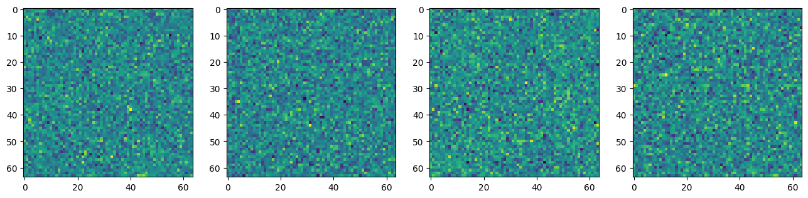
fig, axs = plt.subplots(1, 4, figsize=(16, 4))
for c in range(4):
axs[c].imshow(query_noises.mean(0, keepdim=True)[0][c].cpu())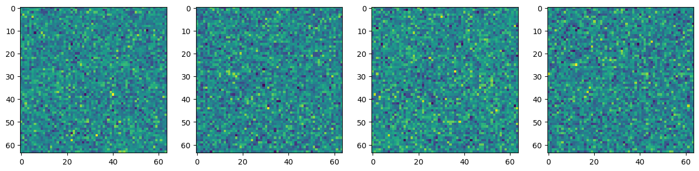
While there isn’t much that looks interesting when looking at the reference_noises or query_noises individually, let’s look at the difference between the two.
diff_noises = (reference_noises.mean(0, keepdim=True) - query_noises.mean(0, keepdim=True))fig, axs = plt.subplots(1, 4, figsize=(16, 4))
for c in range(4):
axs[c].imshow(diff_noises[0][c].cpu())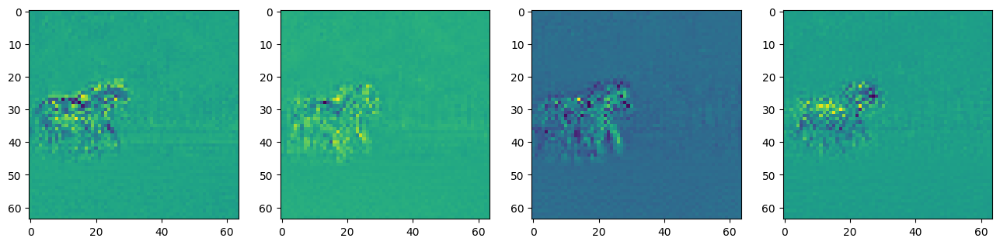
Now, we are seeing some signs that the noise that is being removed is quite different over the horse area of the picture and pretty similar outside of that area. One thing to note on these channels is that some of them are darker surrounding the horses and some are lighter.
diff_noises.min(), diff_noises.max()(tensor(-0.8503, device='cuda:0'), tensor(0.6133, device='cuda:0'))One thing I’ve found improves this is to determine the distance away from the midpoint, so I take the absolute value to make sure the intensity, not the direction, is being taken into consideration. The thought here is that whether the zebra query or the horse reference is activating that noise a lot, it is probably a pixel we should include in the mask.
diff_noises_abs = diff_noises.abs()fig, axs = plt.subplots(1, 4, figsize=(16, 4))
for c in range(4):
axs[c].imshow(diff_noises_abs[0][c].cpu())#, cmap='Greys')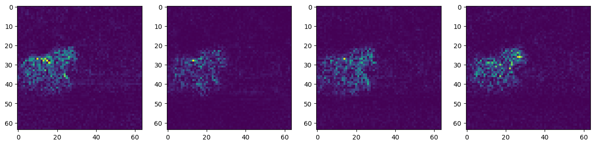
Now, let’s scale all of our values to be between 0 and 1 by subtracting the smallest value and then dividing everything by the largest value. I am not removing any values when doing this although I will note here that the paper does say to “remove extreme values in noise predictions”. I wasn’t sure how to go about doing this.
diff_noise_normed = (diff_noises_abs - diff_noises_abs.min())/(diff_noises_abs - diff_noises_abs.min()).max()diff_noise_normed.min(), diff_noise_normed.max()(tensor(0., device='cuda:0'), tensor(1., device='cuda:0'))mask = diff_noise_normed.mean(dim=1).squeeze()The next step is to binarize the mask so that everything is either a 0 or a 1. To acheive this, I used Otsu thresholding which I believe deviates from the version that is used in the paper which seems more straightforward: “binarized with a threshold, which we set to 0.5 by default”. I was never able to get a mask that I was happy with when using that strategy.
def extract_channel_mask(img, do_inverse=False):
kernel = np.ones((3,3),np.uint8)
img = (img*255).squeeze().cpu().to(torch.uint8).numpy()
if do_inverse:
ret2,img2 = cv2.threshold(img,0,1,cv2.THRESH_BINARY_INV+cv2.THRESH_OTSU)
else:
ret2,img2 = cv2.threshold(img,0,1,cv2.THRESH_BINARY+cv2.THRESH_OTSU)
dilate = cv2.dilate(img2, kernel)
return dilatefinal_mask = extract_channel_mask(mask)plt.imshow(final_mask)<matplotlib.image.AxesImage at 0x7f3d61067e20>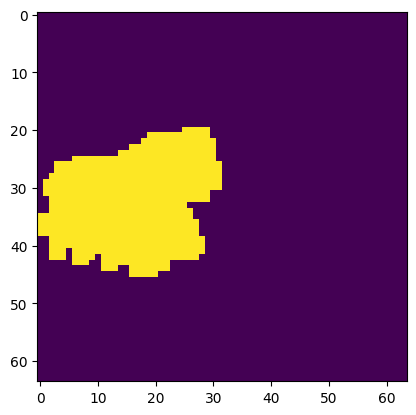
Since our mask is generated in Latent Space, we have to find a way to go from latent space back to the original image space. For this, I decided to use F.interpolate.
horse_sized_mask = F.interpolate(torch.from_numpy(final_mask).unsqueeze(0).unsqueeze(0), mode='nearest', size=(init_image.size[1],init_image.size[0])).squeeze()The mask came out looking pretty good for this easy prompt. The horses are definitely well masked and seem to match what would intuitively make sense. I have done some other prompts that didn’t look good including trying to change the grass into sand and changing the forest into a mushroom forest. Both of these included the horses in the mask still.
plt.imshow(init_image)
plt.imshow(horse_sized_mask.squeeze().cpu(), alpha=0.5)<matplotlib.image.AxesImage at 0x7f3d60fadd90>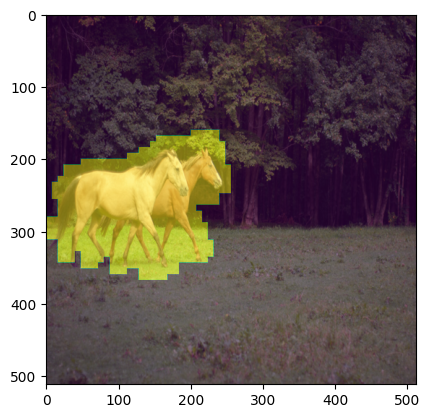
Most of the interesting results from this paper are coming from step 1. The other two steps are hard to really build up to, but I will share them here.
Step 2: Encoding is replicating the step that was done before where we add noise back into the latent. This is already being done so there was no new code that was needed to accomplish this. This is the code where that step occurs:
# add noise to latents using the timesteps
noise = torch.randn(init_latents.shape, generator=generator, device=device, dtype=latents_dtype)
noisy_latents = scheduler.add_noise(init_latents, noise, timesteps)Step 3: Decode with mask-wise correction is interesting, but also a step that doesn’t add much code. The idea of step 3 is that anything outside of the mask that was generated from step 1 will be reverted to the original pixel value. So only the pixels that are inside of the masked areas will be changed which helps accomplish the goal of keeping most of the original image the same as before the prompt.
Here is the equation of the concept I described: \(\tilde{y}_t = M*y_t + (1−M)*x_t\) where \(y_t\) is the new image and \(x_t\) is the original image (both encoded in latent space).
Let’s look at the results:
pipe = StableDiffusionInpaintPipeline.from_pretrained(
"runwayml/stable-diffusion-inpainting",
revision="fp16",
torch_dtype=torch.float16,
).to(torch_device)plt.imshow(torch.from_numpy((final_mask)).cuda().float().cpu())<matplotlib.image.AxesImage at 0x7f3d80ee4610>def image_grid(imgs, rows, cols):
assert len(imgs) == rows*cols
w, h = imgs[0].size
grid = PIL.Image.new('RGB', size=(cols*w, rows*h))
grid_w, grid_h = grid.size
for i, img in enumerate(imgs):
grid.paste(img, box=(i%cols*w, i//cols*h))
return gridfor i in range(0,20):
generator = torch.cuda.manual_seed(i)
# final_pil, _= img2noise(init_image, prompt=query_text, mask=torch.from_numpy((final_mask)).cuda(), generator=generator, strength=0.5)
final_pil = pipe(prompt=query_text, image=init_image, mask_image=Image.fromarray(255*horse_sized_mask.numpy()), num_images_per_prompt=1).images
print(i)
display(final_pil[0])0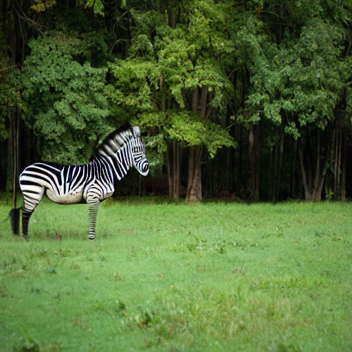
1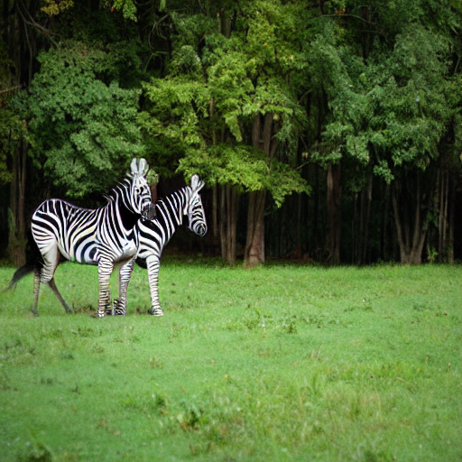
2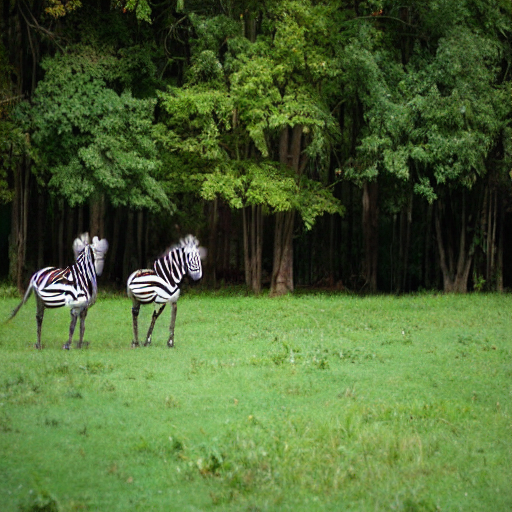
3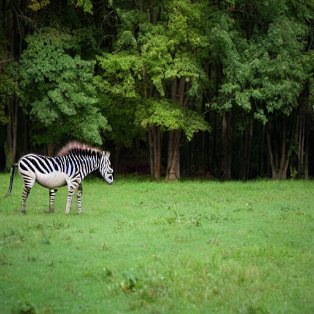
4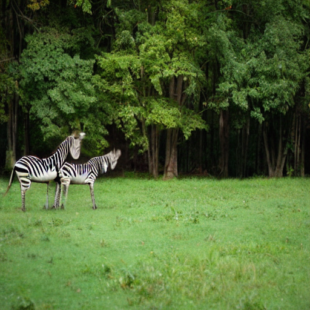
5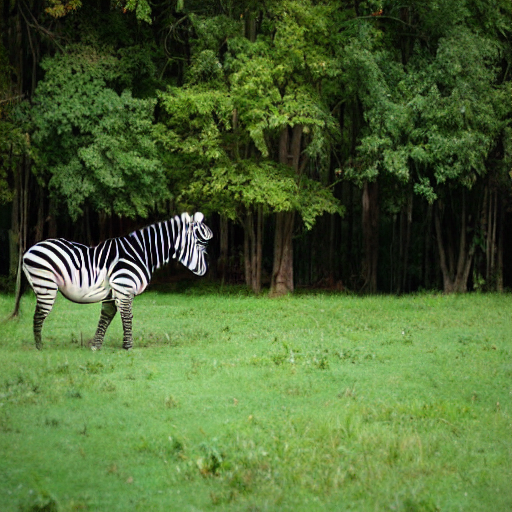
6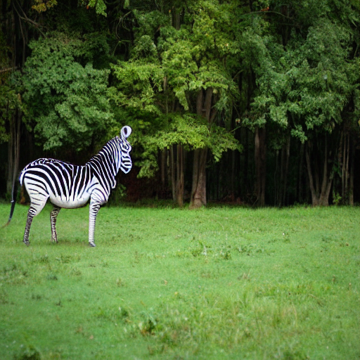
7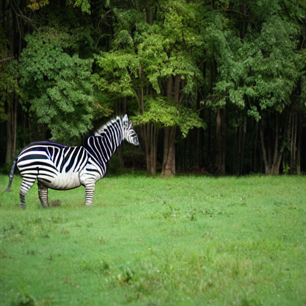
8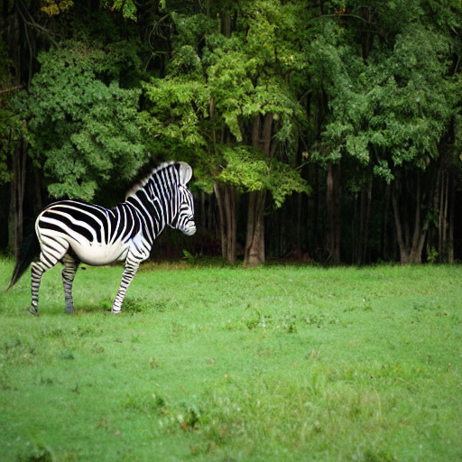
9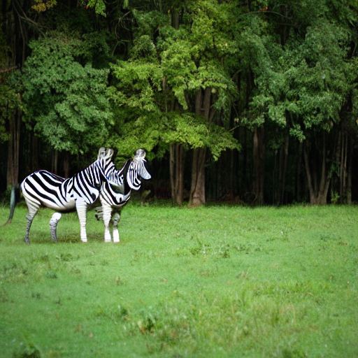
10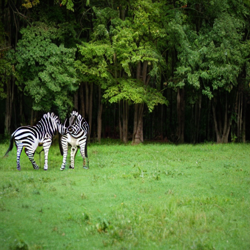
11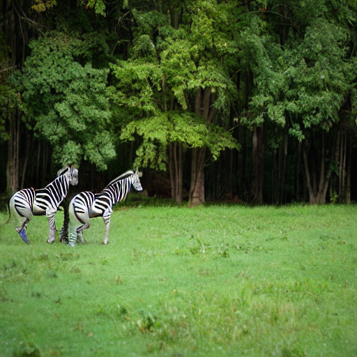
12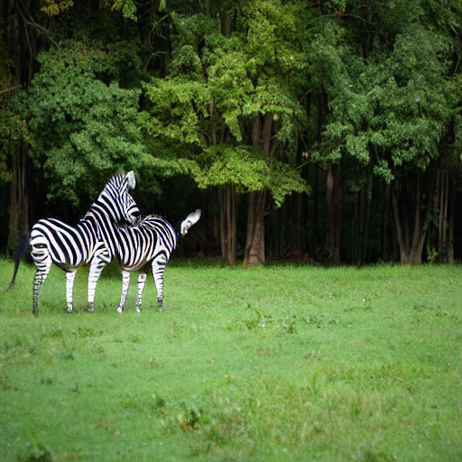
13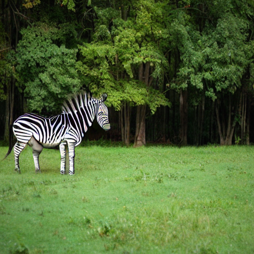
14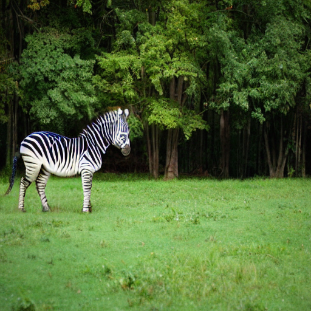
15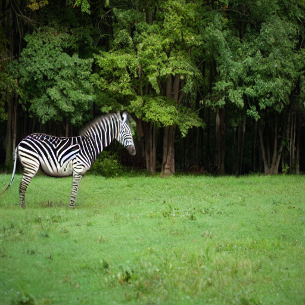
16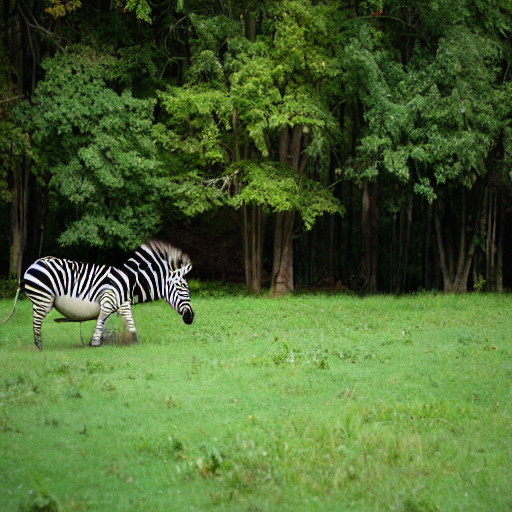
17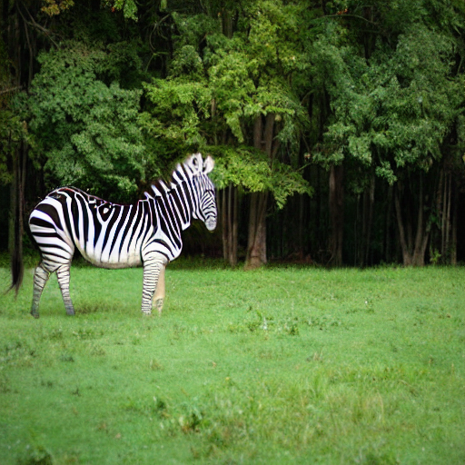
18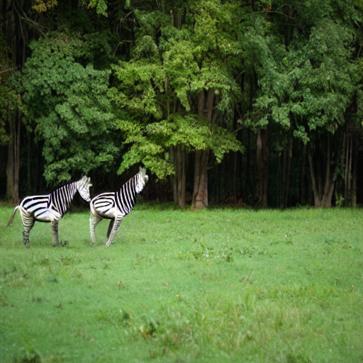
19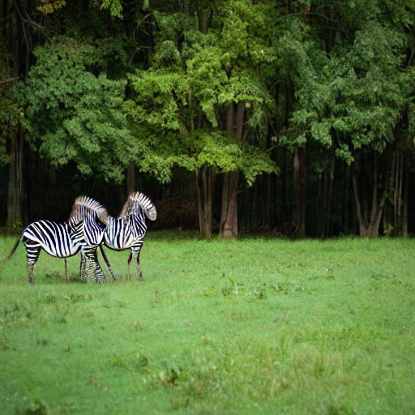
Overall, it seems that the process is doing what we would expect. I am seeing some decent results, but there is definitely still room for innovation in this space. If you noticed any typos or have any ideas for improving this blog post, please reach out to kevin@problemsolversguild.com and let me know! Thank you for reading and I hope this has been helpful in your learning process.